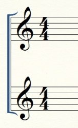

Two or more staves can be connected with a vertical line at the beginning thus creating a system of staves, which indicates that the music written on these staves is to be played simultaneously. This line can also be a bracket and brace.
Brackets indicate that the music on the staves is to be played simultaneously by multiple instruments. They are shown as an additional vertical joining the staves.

Figure 1.18.1. A bracket
A brace (also called an “accolade”) on the other hand indicates that the music written on te staves is to be played simultaneously by a single instrument, such as harp or piano.
Figure 1.18.2. A brace/accolade